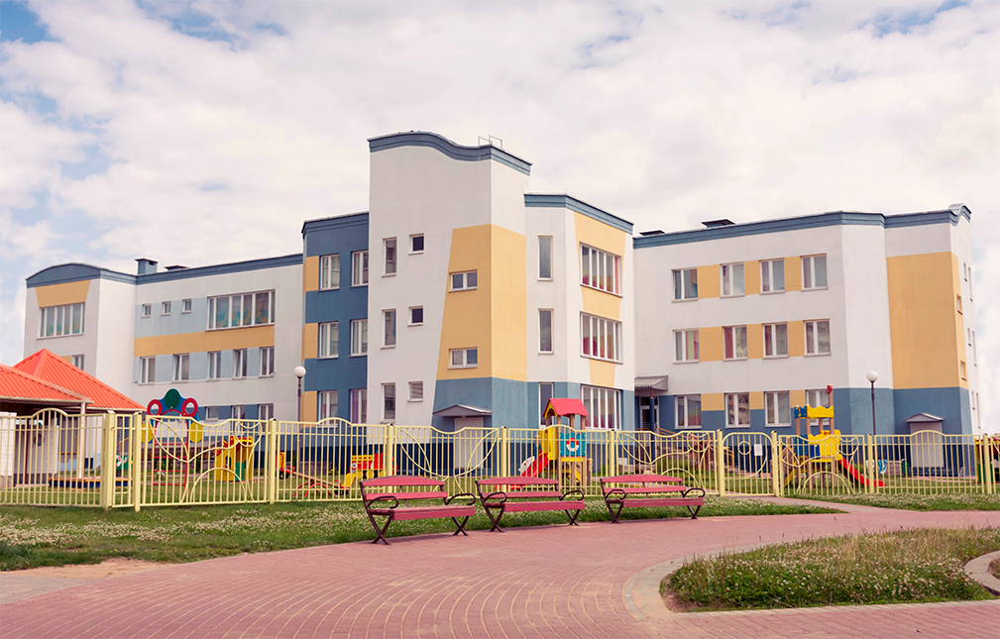

Главная / Об учереждении
Об учереждении
Государственное учреждение образования «Ясли-сад №157» управления по образованию администрац и Заводского района, был основан 16.02.1962г. в Минске. В 1985 г. была произведена перепланировка, две открытые веранды перестроены в музыкальный и спортивный залы. По итогам выполнения социально-экономический показателей в 2017году педагогический коллектив занял первое место в номицации «Лучший Ясли-Сад 2017»